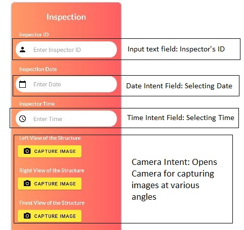
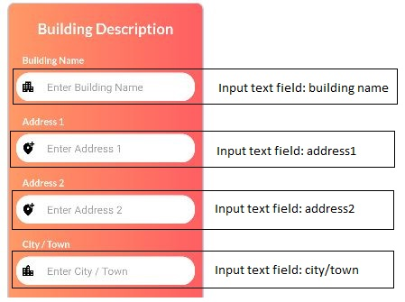
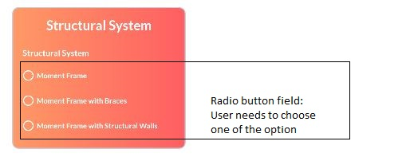
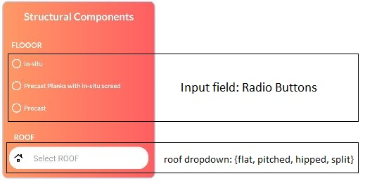
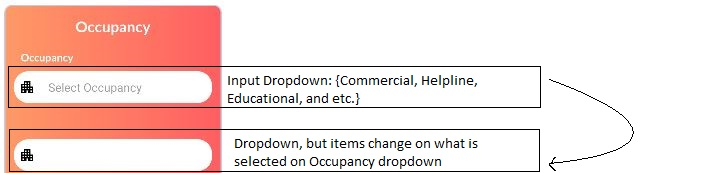
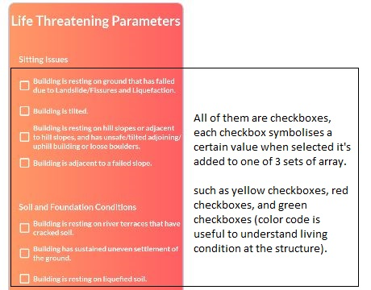
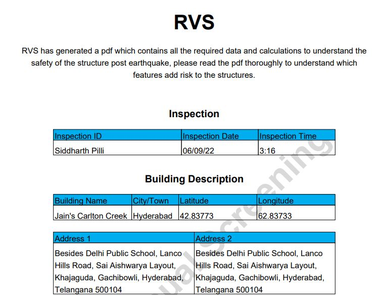

Getting Started
The RVS Application has been created using Android Studio & Java. To run the application in your Android Studio follow the steps below.
To access the GitHub repository for the EDRI application, you'll be needing private access, request for permission by writing a mail to siddharth.pilli@inai.iiit.ac.in or bhaskar.kuntimalla@ihub-data.iiit.ac.in
Installation
Small Description
Windows
Fork and clone the github repository.
Mac OS
Fork and clone the github repository.
Linux
Fork and clone the github repository.
Configuration
Once you have cloned the repository you can open the project in Android Studio. Goto File > Open > Select The cloned Repository
Run the App
To run the Android Application, you can select your emulator either a real phone or an emulator and run the application.

App - File Directory
The file directory of application consists of the root main folder, with two directories in it, example.myapplication9 and memorynotfound.pdf.itext. example.myapplication9 is the main directory in the app.
Inside example.myapplication9 there are 4 activities MainActivity, LoginActivity, RegistrationActivity, and HeaderFooterPageEvent

Usage & Features
We will explore the various usage and features of the application.
The entierty of the application is an survey, where based on the features you select it'll risk assess your structure and give a clear understanding on which features causes the structure livable and non-livable. The survey consists of 6 sections, which are Inspection, Building Description, Stuctural System, Stuctural Components, Occupancy, and Life Threatening Parameters.
Inspection
The first section of the survey starts with Inspection. In the Inspection section it consists of various forms that is informative to understand who inspected the structure, date of inspection, time of inspection, and photos of the strucutre in various angles.
Building Description
In Building Description user need to enter and specify information about the Building such as building name, address of the building, and etc.
Stuctural System
Structural system, in building construction, the particular method of assembling and constructing structural elements of a building so that they support and transmit applied loads safely to the ground without exceeding the allowable stresses in the members. In the Stuctural System section the user needs to choose if his structure belongs to any option below.
Structural Components
Structural components means the foundations, columns, girders, beams, supports, concrete slabs and other structural members of the Buildings, those portions of the exterior walls of the Buildings lying outside of a plane which is the interior face of the window glass of such walls and all Building Systems. In Structural Components there are 2 subsets which are FLOOR and ROOF.
Occupancy
In Occupancy the user needs to select the Occupancy of the structure, for example Commercial, Education, Healthline and etc. There are two dropdowns here mainly because it's programmed in the concept of synchronous changing when a item in dropdown is selected, for example: If I were to select Healthline, the second dropdown updates to the subsets in Healthline such as Hospital, Fire station, Police station.
Life Threatening - Parameters
In Life threatening - parameters the user needs to check through multiple checkboxes to understand if there are any life threatening factors in the structure or at the structure.
Submitting Result - PDF
Once everything's filled, all the input including Dropdowns, Text Input, Checkboxes, and etc-; we can click the submit button if we left anything out the app will ask us to fill that specific input 😉. But if we filled everything and click on submit the application will create a PDF file which contains the Risk assessment of the structure, below submit we have the "OPEN FILE" button when we click on it, it will take us to the PDF document. Below is the snapshot of how the PDF looks lile.

Issues
If you have any issue please raise a PR in github RVS